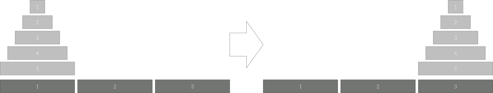
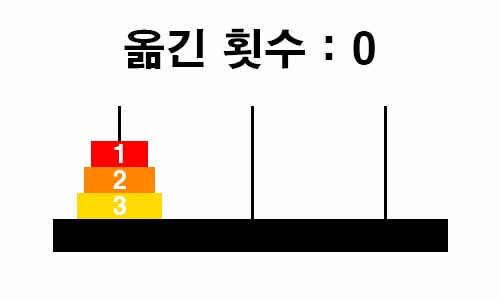

백준 11729. 하노이 탑 이동 순서
- https://www.acmicpc.net/problem/11729
-
문제 :
세 개의 장대가 있고 첫 번째 장대에는 반경이 서로 다른 n개의 원판이 쌓여 있다. 각 원판은 반경이 큰 순서대로 쌓여있다. 이제 수도승들이 다음 규칙에 따라 첫 번째 장대에서 세 번째 장대로 옮기려 한다.
1. 한 번에 한 개의 원판만을 다른 탑으로 옮길 수 있다.
2. 쌓아 놓은 원판은 항상 위의 것이 아래의 것보다 작아야 한다.
이 작업을 수행하는데 필요한 이동 순서를 출력하는 프로그램을 작성하라. 단, 이동 횟수는 최소가 되어야 한다.
아래 그림은 원판이 5개인 경우의 예시이다.
 -
입력 :
첫째 줄에 첫 번째 장대에 쌓인 원판의 개수 N (1 ≤ N ≤ 20)이 주어진다. -
출력 :
첫째 줄에 옮긴 횟수 K를 출력한다.
두 번째 줄부터 수행 과정을 출력한다. 두 번째 줄부터 K개의 줄에 걸쳐 두 정수 A B를 빈칸을 사이에 두고 출력하는데, 이는 A번째 탑의 가장 위에 있는 원판을 B번째 탑의 가장 위로 옮긴다는 뜻이다. -
풀이 :
가장 큰 원판을 옮기기 위해서는 가장 큰 원판 위에 있던 모든 원판을 두 번째 장대에 옮겨야 한다. 가장 큰 원판을 세 번째 장대에 옮긴 후 두 번째 장대에 있는 원판들을 세 번째 장대로 옮긴다.
원판이 1개일 때 옮기는 횟수는 1번이다.
원판이 2개일 때 옮기는 횟수는 3번이다.
원판이 3개일 때 옮기는 횟수는 7번이다.

원판을 다른 곳에 옮기려면 그 위에 있는 원판이 옮기기 전과 옮긴 후 이렇게 두번 욺겨지는 걸 확인할 수 있다.
원판 개수에 따른 옮긴 횟수는 점화식으로는 d[n] = d[n - 1] * 2 + 1 (d[1] = 1), 아니면 2n - 1로 계산할 수 있다.
옮긴 횟수를 출력 후에는 옮긴 원판이 현재 장대에서 어느 장대로 옮겨졌는 지를 출력해야하는 데 원판이 3개일 때 답은 다음과 같다
여기서 3번 원판을 기준으로 보면 3번 원판을 옮기기 위해 2번 원판을 3번 원판의 현재 위치인 첫 번째 장대도 옮겨질 위치인 세 번째 장대도 아닌 두 번째 장대로 옮기고 옮긴 후에는 2번 원판이 3번 원판을 옮긴 곳에 옮겨진다.
즉, 큰 원판 위에 작은 원판의 경우 큰 원판이 있었던 위치와 큰 원판의 현재 위치와 큰 원판이 갈 위치를 제외한 위치의 장대 번호가 출력이 되고 큰 원판이 옮겨진 후에는 현재 작은 원판의 위치와 큰 원판이 옮기진 위치가 출력된다.
정리하면 다음과 같다.
(큰 원판 위치) (6 - 큰 원판 위치 - 큰 원판이 갈 위치)
(큰 원판 위치) (큰 원판이 갈 위치)
(6 - 큰 원판 위치 - 큰 원판이 갈 위치) (큰 원판이 갈 위치)
이 점을 유의하여 재귀함수를 작성 후 답을 출력한다.